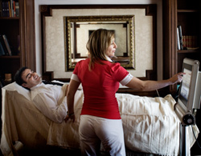

A chi si rivolge
L’infermiere,
“trainer pelvico” si rivolge a
uomini e donne di tutte le età che desiderano prevenire o curare
disfunzioni 
a carico della regione
pelvi-perineale, a coloro che hanno disturbi trattabili con una
riabilitazione della pelvi, ma anche a coloro che vogliono recuperare una sana e soddisfacente
vita sessuale.
Si
rivolge sia agli
uomini che alle
donne in caso di:
L’attenzione di Laura e Maria è rivolta a chi ha una vita profondamente segnata da ansia, depressione, tendenza a isolarsi e a evitare i rapporti interpersonali; a storie di persone che limitano i propri spostamenti quotidiani ai soli luoghi e percorsi in cui conoscono la collocazione dei servizi igienici ("mappatura delle toilette"), riducono l'assunzione di liquidi, svuotano preventivamente la vescica, e evitano l'intimità sessuale.
Le sintomatologie elencate sono disturbi che danno molte limitazioni alla vita lavorativa, sociale, sessuale, con ripercussioni sul tono dell’umore, sullo stato emotivo e quindi sulla qualità di vita. Purtroppo rimane un problema ancora sottostimato perché tenuto nascosto, per vergogna o per leggerezza del sintomo.
Quando le persone vengono a conoscenza della possibilità di
ridurre notevolmente o curare del tutto il problema che li affligge con
metodiche non dolorose ed invasive, con
assenza di effetti collaterali e che non compromettono, anzi
agevolano un’eventuale
opzione chirurgica, si rivolgono a noi.
La riabilitazione perineale è inoltre indicata dalle ultime linee-guida dell’International Continence Society come primo approccio terapeutico per l’incontinenza urinaria a tutti i livelli e, secondo i risultati di un recente studio italiano, consente il raggiungimento della guarigione nel 70 % dei casi.
Di norma richiediamo la prescrizione del proprio medico specialista di fiducia che riporta la diagnosi. Applichiamo dei protocolli di rieducazione e riabilitazione perineale con le tecniche e le linee guida più innovative, con le strumentazioni più all’avanguardia, ma soprattutto, rispettiamo le normative elettromedicali oggi in vigore.